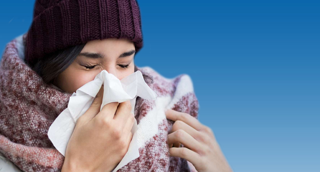

Conseils au grand public
Se laver fréquemment les mains avec une solution hydroalcoolique ou à l’eau et au savon Pourquoi? Se laver les mains avec une solution hydroalcoolique ou à l’eau et au savon tue le virus s’il est présent sur vos mains.
Se couvrir la bouche et le nez avec le pli du coude ou avec un mouchoir en cas de toux ou d’éternuement – jeter le mouchoir immédiatement après dans une poubelle fermée et se laver les mains avec une solution hydroalcoolique ou à l’eau et au savon.
Respecter les règles d’hygiène respiratoire
Se couvrir la bouche et le nez avec le pli du coude ou avec un mouchoir en cas de toux ou d’éternuement – jeter le mouchoir immédiatement après dans une poubelle fermée et se laver les mains avec une solution hydroalcoolique ou à l’eau et au savon.
Pourquoi ? Se couvrir la bouche et le nez en cas de toux ou d’éternuement permet d’éviter la propagation des virus et autres agents pathogènes.
Éviter les contacts proches
Maintenir une distance d’au moins 1 mètre avec les autres personnes, en particulier si elles toussent, éternuent ou ont de la fièvre.

Éviter de se toucher les yeux, le nez et la bouche
Les mains sont en contact avec de nombreuses surfaces qui peuvent être contaminées par le virus. Si vous vous touchez les yeux, le nez ou la bouche, vous risquez d’être en contact avec le virus présent sur ces surfaces.
En cas de fièvre, de toux et de dyspnée, consulter un médecin sans tarder
Indiquez si vous vous êtes rendu dans une région de Chine où le 2019-nCoV a été signalé, ou si vous avez été en contact étroit avec une personne en provenance de Chine qui présente des symptômes respiratoires.
En cas de symptômes respiratoires bénins, si vous n’avez jamais voyagé en Chine
Observez scrupuleusement les règles élémentaires d’hygiène respiratoire et d’hygiène des mains et restez chez vous jusqu’à ce que vous soyez guéri, si possible.
Par précaution, observer les règles d’hygiène générale quand on se rend sur les marchés d’animaux vivants, de produits frais ou de produits d’origine animale
Se laver régulièrement les mains à l’eau potable et au savon après avoir touché des animaux ou des produits d’origine animale, éviter de se toucher les yeux, le nez ou la bouche avec les mains et éviter les contacts avec des animaux malades ou des produits d’origine animale avariés. Tout contact avec d’autres animaux éventuellement présents sur le marché (par exemple, chats ou chiens errants, rongeurs, oiseaux, chauves-souris) doit absolument être évité. Il faut aussi éviter tout contact avec des déchets ou des liquides d’origine animale se trouvant sur le sol ou sur les structures des magasins et du marché.
Éviter de consommer des produits d’origine animale crus ou mal cuits
Conformément aux bonnes pratiques relatives à la sécurité sanitaire des aliments, la viande, le lait ou les abats crus doivent être manipulés avec précaution afin d’éviter une contamination croisée avec les aliments destinés à être consommés crus.